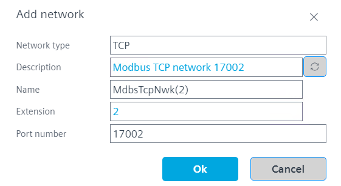

The configured device needs to support more than one TCP network. Consult the data sheet to check whether the device supports more than one Modbus TCP network.
Go to Building > Building structure.
Right-click a device and select Go to engineering.
Open the Modbus task.
Click Add network to add a TCP network for the physical network. You can add additional TCP devices (not part of gateway) to the physical network.
Repeat the last step and repeat the steps below for each gateway line.
In the Add network dialog box, enter the port number of the gateway line.

Click Add gateway to add a Modbus gateway for each TCP network.
In the Add gateway dialog box, enter the IP address of the gateway.
Click OK.
One Modbus gateway line is automatically added to the gateway.
Do not add more lines. Port routing supports only one line per gateway/network.
Right-click the gateway line and select Add device to create a new RTU device or drag and drop a device from the library.
Add a client address to your RTU device.
The TCP network together with the gateway define the communication settings.
The client address of the device and the IP address of the Modbus gateway line make the device accessible.
某些设备通过端口充当其他 RTU 设备的网关。这些设备将数据点传送到其他设备。它们是具有客户端 RTU 地址的 IP 设备。将此类型的设备添加到包含物理网络的 TCP 网络（步骤 4）。